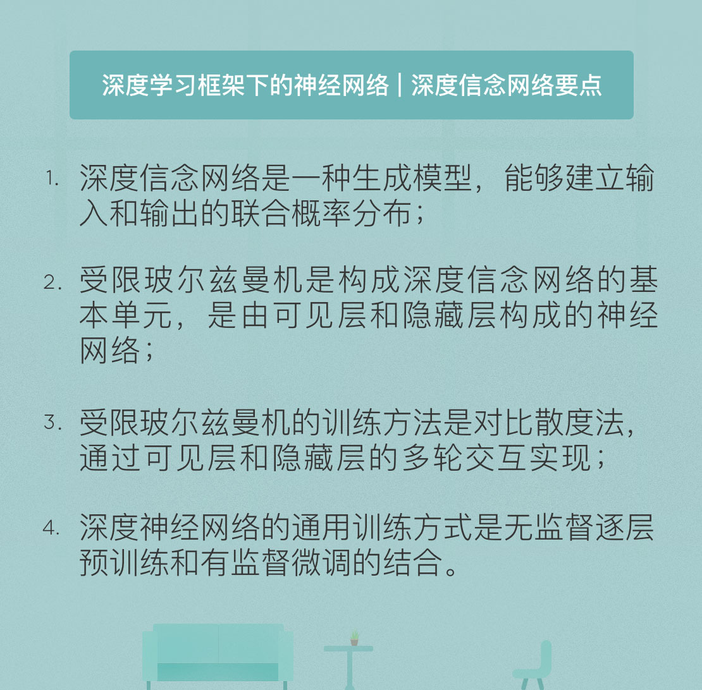

- 00 开篇词 人工智能：新时代的必修课.md.html
- 01 数学基础 九层之台，起于累土：线性代数.md.html
- 02 数学基础 月有阴晴圆缺，此事古难全：概率论.md.html
- 03 数学基础 窥一斑而知全豹：数理统计.md.html
- 04 数学基础 不畏浮云遮望眼：最优化方法.md.html
- 05 数学基础 万物皆数，信息亦然：信息论.md.html
- 06 数学基础 明日黄花迹难寻：形式逻辑.md.html
- 07 机器学习 数山有路，学海无涯：机器学习概论.md.html
- 08 机器学习 简约而不简单：线性回归.md.html
- 09 机器学习 大道至简：朴素贝叶斯方法.md.html
- 10 机器学习 衍化至繁：逻辑回归.md.html
- 11 机器学习 步步为营，有章可循：决策树.md.html
- 12 机器学习 穷则变，变则通：支持向量机.md.html
- 13 机器学习 三个臭皮匠，赛过诸葛亮：集成学习.md.html
- 14 机器学习 物以类聚，人以群分：聚类分析.md.html
- 15 机器学习 好钢用在刀刃上：降维学习.md.html
- 16 人工神经网络 道法自然，久藏玄冥：神经网络的生理学背景.md.html
- 17 人工神经网络 一个青年才俊的意外死亡：神经元与感知器.md.html
- 18 人工神经网络 左手信号，右手误差：多层感知器.md.html
- 19 人工神经网络 各人自扫门前雪：径向基函数神经网络.md.html
- 20 人工神经网络 看不见的手：自组织特征映射.md.html
- 21 人工神经网络 水无至清，人莫至察：模糊神经网络.md.html
- 22 深度学习 空山鸣响，静水流深：深度学习概述.md.html
- 23 深度学习 前方有路，未来可期：深度前馈网络.md.html
- 24 深度学习 小树不修不直溜：深度学习中的正则化.md.html
- 25 深度学习 玉不琢不成器：深度学习中的优化.md.html
- 26 深度学习 空竹里的秘密：自编码器.md.html
- 27 深度学习 困知勉行者勇：深度强化学习.md.html
- 28 深度学习框架下的神经网络 枯木逢春：深度信念网络.md.html
- 29 深度学习框架下的神经网络 见微知著：卷积神经网络.md.html
- 30 深度学习框架下的神经网络 昨日重现：循环神经网络.md.html
- 31 深度学习框架下的神经网络 左右互搏：生成式对抗网络.md.html
- 32 深度学习框架下的神经网络 三重门：长短期记忆网络.md.html
- 33 深度学习之外的人工智能 一图胜千言：概率图模型.md.html
- 34 深度学习之外的人工智能 乌合之众的逆袭：集群智能.md.html
- 35 深度学习之外的人工智能 授人以鱼不如授人以渔：迁移学习.md.html
- 36 深度学习之外的人工智能 滴水藏海：知识图谱.md.html
- 37 应用场景 你是我的眼：计算机视觉.md.html
- 38 应用场景 嘿, Siri：语音处理.md.html
- 39 应用场景 心有灵犀一点通：对话系统.md.html
- 40 应用场景 数字巴别塔：机器翻译.md.html
- 一键到达 人工神经网络复习课.md.html
- 一键到达 应用场景复习课.md.html
- 一键到达 数学基础复习课.md.html
- 一键到达 机器学习复习课.md.html
- 一键到达 深度学习之外的人工智能复习课.md.html
- 一键到达 深度学习复习课.md.html
- 一键到达 深度学习框架下的神经网络复习课.md.html
- 推荐阅读 我与人工智能的故事.md.html
- 新书 《裂变：秒懂人工智能的基础课》.md.html
- 直播回顾 机器学习必备的数学基础.md.html
- 第2季回归 这次我们来聊聊机器学习.md.html
- 结课 溯洄从之，道阻且长.md.html
- 课外谈 “人工智能基础课”之二三闲话.md.html
- （课外辅导）人工神经网络 拓展阅读参考书.md.html
- （课外辅导）数学基础 拓展阅读参考书.md.html
- （课外辅导）机器学习 拓展阅读参考书.md.html
- （课外辅导）深度学习 拓展阅读参考书.md.html
- 捐赠
28 深度学习框架下的神经网络 枯木逢春：深度信念网络
2006年，深度学习的祖师爷乔弗里·辛顿提出了深度信念网络模型，它吹响了连接主义学派复兴的号角，也打开了通向人工智能新世界的大门。
深度信念网络是一种概率生成模型，能够建立输入数据和输出类别的联合概率分布。网络中包含多个隐藏层，隐藏层中的隐藏变量通常是二进制数，用来对输入信号进行特征提取。输入信号从深度信念网络的最底层输入，并自下而上有向地传递给隐藏层。而在网络最上面的两层中，神经元之间的连接是没有方向并且对称的，这两个层次共同构成了联想记忆。
从功能上看，深度信念网络的每一个隐藏层都代表着对输入数据的一种中间表示，而隐藏层中的每个神经元都代表着输入数据不同层次上的特征，不同层神经元之间的连接则代表着不同层次特征之间的联系，所有特征和特征之间的所有关系共同形成了对输入数据的抽象描述。
从结构上看，复杂的深度信念网络可以看成由若干简单的学习单元构成的整体，而构成它的基本单元就是受限玻尔兹曼机（restricted boltzmann machine）。受限玻尔兹曼机早在1986年便已诞生，可直到20年后才因辛顿的成果而得到重视。
受限玻尔兹曼机的模型非常简单，就是一个两层的神经网络，包括一个可见层和一个隐藏层。可见层用来接收数据，隐藏层则用来处理数据。可见层和隐藏层以全连接的方式相连，也就是任意两个不同层次中的神经元都会两两相连。但同一层中的神经元则不会互相连接，因而每个层内也就没有信息流动，这正是其名称中“受限”的来源。
回忆一下神经网络中介绍过的神经元的工作机制：每个隐藏神经元的输入都是数据向量中所有元素的线性组合，这个线性组合和偏置信号相加后，共同作为神经元传递函数的输入，而传递函数的输出就是隐藏神经元的输出。但受限玻尔兹曼机所做的远非得到个输出这么简单的事情，它还要以无监督的方式对数据进行重构。即使没有更深层的网络结构，数据也会在输入层和隐藏层中进行多次前向和反向的传递。
在隐藏神经元得到输出后，受限玻尔兹曼机需要将输出结果反馈给可见层。具体的做法是保持所有连接的权重系数不变，但是将方向反转，这样一来，每个隐藏单元的输出就会按照已经确定的系数反馈给可见层，可见层的每个神经元接收到的反馈信息是不同隐藏单元输出的线性组合。反馈信息和一组新的偏置分量求和就得到了对原始输入的估计，估计值和原始输入的差值则表示了重构误差。通过让重构误差在可见层和隐藏层之间循环往复地传播，就可以求出使重构误差最小化的一组权重系数。
以上的学习算法就是由辛顿提出的对比散度（contrastive divergence）方法，它既能让隐藏层准确地提取可见层的特征，也能根据隐藏层的特征较好地还原出可见层。当隐藏层和可见层的神经元都使用S型函数作为传递函数时，神经元的输出就可以视为单个节点的激活概率。在这种情况下，对比散度方法具体的训练过程包括以下几个步骤：
- 输入训练样本列向量\(\\mathbf{v}\)，计算隐层节点的概率，在此基础上从这一概率分布中抽取一个隐层节点激活向量的样本列向量\(\\mathbf{h}\)；
- 计算\(\\mathbf{v}\)和\(\\mathbf{h}\)的外积\(\\mathbf{v} \\mathbf{h} ^ T\)，结果记为“正梯度”；
- 利用\(\\mathbf{h}\)重构可见层节点的激活向量样本\(\\mathbf{v'}\)，输入\(\\mathbf{v'}\)再次获得一个隐层节点的激活向量样本\(\\mathbf{h'}\) ；
- 计算\(\\mathbf{v'}\)和\(\\mathbf{h'}\)的外积\(\\mathbf{v'} \\mathbf{h'} ^ T\)，结果记为“负梯度”；
- 使用正梯度和负梯度的差值，以学习率\(\\epsilon\)更新权重系数，即\(\\mathbf{W} = \\mathbf{W} + \\epsilon (\\mathbf{v} \\mathbf{h} ^ T - \\mathbf{v'} \\mathbf{h'} ^ T)\)；
- 以学习率\(\\epsilon\)更新可见层的偏置系数\(\\mathbf{a}\)和隐藏层的偏置系数\(\\mathbf{b}\)，即\(\\mathbf{a} = \\mathbf{a} + \\epsilon (\\mathbf{v} - \\mathbf{v'}), \\mathbf{b} = \\mathbf{b} + \\epsilon (\\mathbf{h} - \\mathbf{h'})\)}。
对比散度的训练过程本质上是求出一个最符合训练数据集统计特性的概率分布，也就是使训练数据集出现的概率最大的分布参数。在数据的前向传输中，受限玻尔兹曼机的目标是在给定权重系数\(w\)的条件下利用输入\(x\)预测输出\(a\)，也就是求解条件概率\(p(a | x; w)\)；而在使用输出\(a\)重构输入\(x\)的反向传输中，受限玻尔兹曼机的目标变成了求解条件概率\(p(x | a; w)\)。将两个条件概率结合，就可以得到输入输出的联合概率分布\(p(x, a)\)。
将几个受限玻尔兹曼机堆叠在一起，就可以得到深度信念网络（deep belief network）。除了最顶层和最底层外，深度信念网络的每个隐藏层都扮演着双重角色：它既作为之前神经元的隐藏层，也作为之后神经元的可见层。在之前自编码器的介绍中我曾提到，栈式自编码器的训练遵循的是无监督预训练结合有监督微调的策略，深度信念网络采用的同样是这套训练方式，两者的区别只是基本单元的不同。
深度信念网络的无监督预训练也是逐层实现的。对于构成深度信念网络的第一个受限玻尔兹曼机来说，它的可见层就是深度网络的输入层。利用输入样本\(x = h ^ {(0)}\)训练这个玻尔兹曼机，得到的结果就是条件概率\(p(h ^ {(1)} | h ^ {(0)})\)，其中\(h ^ {(1)}\)是第一个玻尔兹曼机的隐藏层，也就是深度信念网络的第一个隐藏层的输出。第一个玻尔兹曼机的隐藏层又是第二个玻尔兹曼机的可见层，因此\(h ^ {(1)}\)就可以作为输入样本来训练得到深度网络第二个隐藏层的输出\(h ^ {(2)}\)。不断重复以上步骤，就可以完成对所有玻尔兹曼机，或者说所有隐藏层的逐层预训练。
栈式自编码器使用softmax分类器实现有监督微调，深度信念网络采用的方法则是在最顶层的受限玻尔兹曼机上又添加了额外的反向传播层。反向传播层以受限玻尔兹曼机的输出作为它的输入，执行有监督的训练，再将训练误差自顶向下地传播到每一个受限玻尔兹曼机当中，以实现对整个网络的微调。这也是为什么深度信念网络要在最顶上的两层进行无方向连接的原因。在实际的使用中，用来做微调的网络无需被局限在反向传播上，大部分用于分类的判别模型都能够胜任这个任务。
其实相比于深度信念网络这个具体的模型，辛顿的贡献更大程度上在于对深度模型训练方法的改进。不夸张地说，正是这套训练策略引领了近十年深度学习的复兴。这种复兴不仅体现在训练效率的提升上，更体现在研究者对训练机制的关注上。
传统的反向传播方法应用于深度结构在原则上是可行的，可实际操作中却无法解决梯度弥散（gradient vanishing）的问题。所谓梯度弥散指的是当误差反向传播时，传播的距离越远，梯度值就变得越小，参数更新的也就越慢。这会导致在输出层附近，隐藏层的参数已经收敛；而在输入层附近，隐藏层的参数几乎没有变化，还是随机选择的初始值。在这种情况下，对网络整体的优化也就无从谈起了。
相比之下，基于预训练的训练方法就不会受梯度弥散的困扰。在梯度下降之前先执行无监督预训练能够在所有隐藏层上一视同仁实现良好的优化效果，并给深度结构带来强大的表达能力。这使得无监督预训练一度成为训练深度结构的不二法门。
但随着研究的不断深入，事实表明无监督预训练并没有人们想象地那么神奇。良好的初始化策略完全可以比逐层预训练更加高效，而梯度弥散的根源并不是反向传播算法的问题，而是在于非线性传递函数非理想的性质。虽然目前深度信念网络的应用远不如卷积神经网络等其他模型广泛，但它却是一次吃螃蟹的成功尝试。如果没有这次尝试，也许我们依然在单个隐藏层的神经网络中兜兜转转，坐井观天。
今天我和你分享了深度信念网络的基本概念和基本原理，其要点如下：
- 深度信念网络是一种生成模型，能够建立输入和输出的联合概率分布；
- 受限玻尔兹曼机是构成深度信念网络的基本单元，是由可见层和隐藏层构成的神经网络；
- 受限玻尔兹曼机的训练方法是对比散度法，通过可见层和隐藏层的多轮交互实现；
- 深度神经网络的通用训练方式是无监督逐层预训练和有监督微调的结合。
在前面介绍的自编码器中，稀疏性既可以降低运算量，也能提升训练效果，发挥着重要的作用。那么同样的原理能否应用在受限玻尔兹曼机和深度信念网络之中呢？
欢迎发表你的观点。

© 2019 - 2023 Liangliang Lee. Powered by gin and hexo-theme-book.